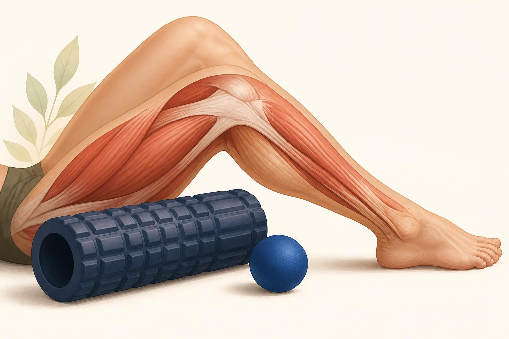

Soft Tissue and Mobilization Basics
Foam rollers and massage tools open a door for a few minutes. Training is what walks through it and makes the change stick.
Walk into almost any gym and you will find a rack of foam rollers, a bin of lacrosse balls, and probably a vibrating massage gun charging in the corner. Clients ask about all three constantly, and coaches use them constantly, often with a story attached: this breaks up knots, this releases fascia, this works out scar tissue. Almost none of that story holds up. What these tools actually do is real, useful, and worth understanding, but it is a different and more modest mechanism than the one most people repeat.
This chapter covers what soft tissue work honestly does and does not do, how to tell a normal tight spot from a genuine restriction, a simple screen you can run on any client, the idea of impingement as a pattern to recognize rather than diagnose, and exactly where your job as a coach ends and a clinician's begins.
What foam rolling and self-myofascial release actually do
The term self-myofascial release describes a client using their own body weight against a roller, ball, or tool to apply sustained pressure to a muscle. The name implies that the muscle's fascia, the connective tissue sheath wrapping it, is being physically released or unstuck. Decades of research on the mechanical properties of fascia and collagen make that explanation very unlikely. Fascia is remarkably strong, and the forces a person can generate by leaning on a foam roller are nowhere near what would be required to plastically deform or permanently reshape that tissue. The same goes for the popular claim about breaking up scar tissue or adhesions with a massage tool. Scar tissue that has matured is dense and will not be broken up by a few minutes of rolling.
What the honest evidence supports is more modest and still genuinely useful: soft tissue work reliably produces a short term increase in range of motion and a temporary reduction in perceived tightness or soreness. The best current explanation for both effects points to the nervous system rather than the tissue itself. Sustained pressure appears to increase a person's tolerance to stretch, meaning the same joint position now feels less uncomfortable even though the tissue has not changed length. There is also likely a neural down regulation effect, a calming of protective muscle tone and the guarding reflexes that normally limit how far a joint will move. In plain terms, the tissue was probably never the true limiter. The nervous system's willingness to let the joint go there was.
Myth: rolling breaks up adhesions, releases fascia, or lengthens tissue. Mechanism: rolling and similar tools raise stretch tolerance and quiet protective muscle guarding through the nervous system, which shows up as a temporary gain in range of motion and a temporary drop in perceived tightness. Both versions predict "you feel looser afterward." Only the second version is supported by the evidence, and it changes how you should use the tool.
A transient window, not a permanent fix
Because the effect is mostly neural, it is also short lived. Studies generally find the range of motion gain from foam rolling or similar self-myofascial release fades within about ten to twenty minutes unless something is done with it. That window is not a flaw in the tool, it is the whole point of the tool. A brief opening in available range of motion is a genuine opportunity, used correctly it lets a client warm up into a position they normally could not reach cleanly and start training from there. Used incorrectly, a client rolls out, feels great for fifteen minutes, and is right back to their old restriction by the second exercise, wondering why nothing changed.
The distinction that matters for programming is transient window versus lasting change. The window is what a roller, ball, or massage tool buys you, a few minutes of easier access to a range. The lasting change, the kind that actually moves a client's baseline mobility over weeks and months, comes from loaded range and training: working strength, control, and repeated exposure inside that newly opened range so the nervous system learns the position is safe to own, not just safe to visit.
Recognizing restrictions versus normal end feel
Every joint has an end feel, the quality of resistance you or the client notice at the very end of a passive range of motion. Learning to read end feel is a coaching skill worth building even without any hands on therapy involved, because it tells you what kind of limitation you are working with.
- A soft or muscular end feel is a gradual, springy resistance, the sensation of a muscle lengthening under tension. This is normal and typically responds well to warm up and mobility work.
- A firm capsular end feel is a harder stop with some give, common at joints like the shoulder or hip where the joint capsule itself is the final limiter. Also usually normal.
- A hard, bony end feel is an abrupt stop with almost no give, bone meeting bone. This is normal at a joint like the elbow in extension, but unexpected anywhere else.
- An empty end feel is the flag to know. The joint stops moving because the client reports pain, not because any tissue has actually run out of range. There is no true mechanical block, just a stop sign from discomfort. This pattern, along with sharp pain, sudden give way, or pain that arrives well before any resistance, is outside a coach's scope to work through and worth a referral conversation.
None of this asks you to name which structure is limiting a joint. It only asks you to notice, side to side, whether a joint's normal quality of resistance is present, or whether something about it looks or feels different than you would expect from a healthy, matched joint on the other side of the body.
Pick a handful of joints most relevant to what the client trains and check them side to side, since asymmetry is usually more informative than any single number. Two quick examples. For the shoulder, have the client raise both arms overhead together, watching from behind for one arm stopping earlier, one shoulder blade winging up higher, or one side reporting a pinch at a specific point in the arc. For the ankle, use a simple knee to wall test, toes a set distance from a wall, drive the knee forward over the toes without the heel lifting, and compare how far back the foot can start on one side versus the other. In both cases you are not diagnosing anything, you are logging a baseline, noting any asymmetry, and deciding whether that joint needs some mobility work before you load it hard.
Impingement, a pattern to recognize and work around
Impingement is one of the most useful patterns for a coach to recognize, and one of the easiest to over diagnose. The idea, using the shoulder as the clearest example, is straightforward. Between the top of the upper arm bone and a bony arch formed by part of the shoulder blade sits a small gap that holds a tendon and a fluid filled cushion called a bursa. Through most of a shoulder's range there is enough room in that gap for everything to glide freely. At certain end ranges, commonly somewhere in the arc of lifting the arm out to the side or overhead, that gap narrows, and the tendon or bursa can get briefly pinched between the two bones.
A client experiencing this usually describes it very specifically: a pinch or ache that shows up at one part of an overhead motion and disappears just above or below it, sometimes called a painful arc. That description is genuinely useful information for programming. It tells you which angle to avoid loading heavily for now, which angle is clear to keep training, and where to focus some shoulder blade positioning and rotator cuff work. What it does not tell you, and what you are not qualified to tell the client, is which structure is actually being pinched, whether there is any tendon damage, or whether "impingement" is even the right label for what is happening. Shoulder pain has several look alike causes, and sorting them out is a clinical job.
Using tools and mobility drills as a bridge, not a treatment
Put the pieces together and a sensible warm up structure falls out naturally. Soft tissue work with a roller, ball, or massage tool, followed by a few basic mobility drills through the joint's available range, opens a short window of easier movement through the mechanism described earlier, better stretch tolerance and less protective guarding, not a physically changed tissue. That window is a bridge, not a destination. The value only shows up if a client walks across that bridge into the training session, using the newly available range under load right away, a goblet squat into a slightly deeper position, an overhead press starting from a freer shoulder, a lunge with a hip that rotates a little more freely.
Treated this way, soft tissue work and mobility drills earn a permanent, useful spot at the start of a session. Treated as a stand alone fix, something a client does instead of training the range rather than before training the range, they become a few minutes of pleasant but temporary relief that never turns into a lasting change. The tool did its job either way. What happens in the next twenty minutes decides whether that job mattered.
This chapter gives you a two step routine for almost any client complaint about tightness. First, open the window, a few minutes of soft tissue work or a stretch on the tight area, using the honest mechanism, better tolerance and less guarding, not a mythical release. Second, immediately spend that window, load the newly available range with a real exercise so the nervous system has a reason to keep offering it next time. Do this consistently across weeks and the transient window slowly becomes the new baseline.
Everything in this chapter, end feel, screens, impingement patterns, soft tissue tools, is about recognition and programming around what you see. None of it makes you a manual therapist, and none of it qualifies you to diagnose a torn tendon, a labral injury, a disc problem, or any other pathology. A client with pain that is sharp rather than achy, pain that is getting worse session to session rather than settling, any numbness, tingling, burning, or radiating sensation, or any suspected injury from a fall, a collision, or a sudden sharp movement needs a physical therapist or physician, not a longer foam rolling routine. When you are unsure whether something is a normal tight spot or something more, the safe default is always to refer out and keep training everything that is not affected in the meantime.
The takeaway
Foam rollers, massage tools, and self-myofascial release do something real, they just do not do the thing most people think. They are not breaking up adhesions, releasing fascia, or permanently lengthening tissue. They are turning down protective guarding and raising stretch tolerance for a short window, most likely ten to twenty minutes, through the nervous system. Used well, that window is a bridge, warm into a better position and then immediately load it with training, and repeated over weeks that becomes a genuine, lasting change in a client's baseline range. Layer on a habit of checking end feel and running a quick side to side screen, and you can recognize a normal tight spot, a painful arc consistent with impingement, and a true red flag well enough to program intelligently around all three, always remembering that recognition is where your job stops and a physical therapist or physician's job begins.